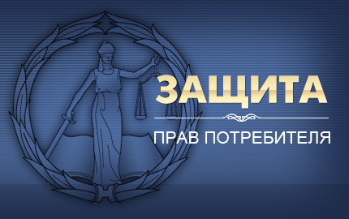

Одним из достаточно часто нарушаемых прав, являются права потребителей. Данный вид споров возникает повсеместно: в магазине, ресторанах, при оказании услуг, пользовании товарами и пр.
Купить гайд
Нарушения прав потребителей встречаются в различных сферах:
-
В области продаж отдельных видов товаров;
-
В сфере оказания услуг и работ;
-
В сфере страхования;
-
В сфере реализации банковских продуктов.
-
В сфере реализации туристических продуктов.
-
При продаже товаров через Маркетплейсы.
Юристы адвокаты по
защите прав потребителей
8 (925) 502-40-09
защите прав потребителей
8 (925) 502-40-09
Важно !
Законом в некоторых случаях предусмотрен обязательный претенциозный порядок разрешения споров, что означает, что прежде чем подать иск в суд, необходимо направить претензию Ответчику, иначе иск будет возвращен.
Кроме того, Законом предусмотрен целый ряд нормативных актов, регулирующих правоотношения в области Защиты прав потребителей в определенных сферах потребительских услуг:
- Закон Российской Федерации от 7 февраля 1992г. №2300-I «О защите прав потребителей»;
- Гражданский кодекс Российской Федерации;
- Федеральный законот 26.01.1996№15-ФЗ «О введении в действие части второй Гражданского кодекса Российской Федерации» (статья 9);
- «Руководящие принципы для защиты интересов потребителей» (приняты 09.04.1985Резолюцией №39/248 на 106-ом пленарном заседании Генеральной АссамблеиООН);
- Постановление Правительства РФ от от 19.01.1998г. №55 "О правилах продажи отдельных видов товаров".
Что бы разобраться и правильно определить способ защиты и необходимый нормативный документ для защиты и восстановления своего нарушенного права, необходимо прибегнуть к услугам специализированного юриста по защите потребителей. Только юрист по защите прав потребителей со специальными знаниями и опытом поможет Вам правильно сориентироваться в большом количестве нормативных актов, правильно составить и подать претензию или исковое заявление в суд на нарушителя Ваших прав.
Какую помощь по защите прав потребителей мы оказываем ?
- Юридическая консультация по нарушенному праву потребителя;
- Составить и направить нарушителю мотивированную претензию;
- Обратиться в РосПотребнадзор в интересах потребителя;
- Обратиться в суд за защитой нарушенных прав потребителя.
Помните !
При обнаружении в товаре недостатков, согласно ст.18 Закона РФ «О защите прав потребителей», потребитель, по своему выбору может потребовать:
- замены на товар этой же марки (этих же модели и (или) артикула);
- замены на товар другой марки (модели, артикула) с соответствующим перерасчётом покупной цены;
- соразмерного уменьшения покупной цены;
- незамедлительного безвозмездного устранения недостатков товара или возмещения расходов на их исправление потребителем или третьим лицом;
- отказаться от исполнения договора купли-продажи и потребовать возврата уплаченной за товар суммы.
Стоимость услуг юристов по защите прав потребителей:
Наши юристы по защите прав потребителей


Преимущества наших юристов по защите прав потребителей !
- Наши юристы являются действующими адвокатами. В соответствии с Законом РФ "Об адвокатской деятельности и адвокатуре в РФ" адвокат имеет статус советника по правовым вопросам, в связи с чем, такая юридическая помощь является квалифицированной.
- Наши юристы имеют значительный судебный опыт по спорам о защите прав потребителей.
- Доступные цены на услуги адвокатов.
- Онлайн консультации удаленно вне офиса.
- Ваши расходы на оплату юридической помощи адвоката мы возмещаем через суд.
Полезные страницы
Претензия в Вайлдберриз.
Проблемы истребования товара от Вайлдберриз.
Образцы документов по защите прав потребителей
Публикации по теме защиты прав потребителей.
Обзор новелл в Пленуме "О защите прав потребителей"
15.11.2020 г. Зеленоград Онлайн.
Спор потребителя с ремонтной мастерской.
14.08.2020 г. Яндекс Дзен.
Отмена тура, спор потребителя и турагента.
16.10.2020 г. Яндекс Дзен.
СПОСОБЫ ЗАЩИТЫ ПРИ ОТМЕНЕ ТУРИСТИЧЕСКОЙ ПУТЕВКИ. ТУРАГЕНТУ И ТУРИСТУ.
20.10.2020 г. Репорт.ру